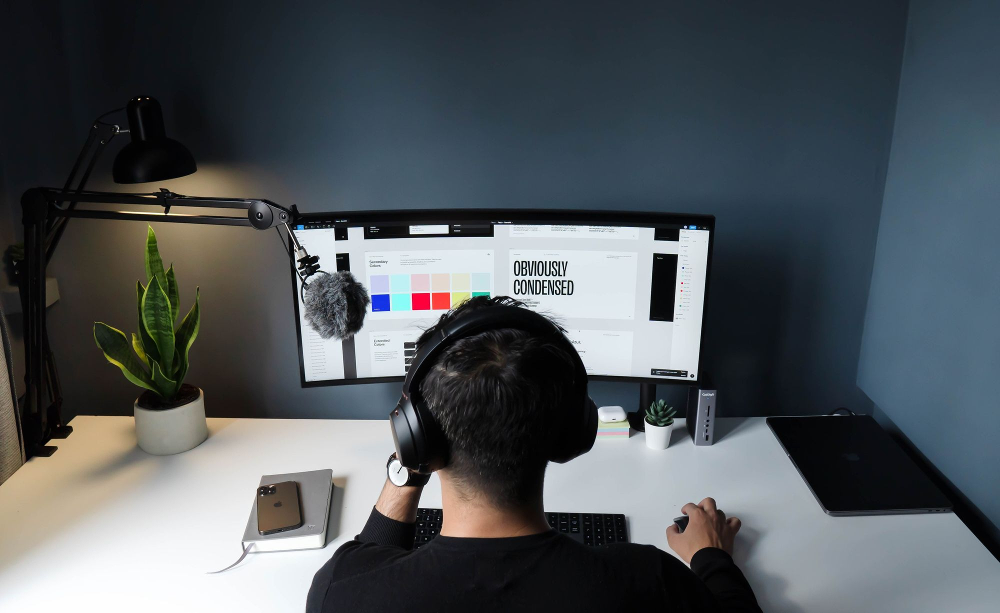
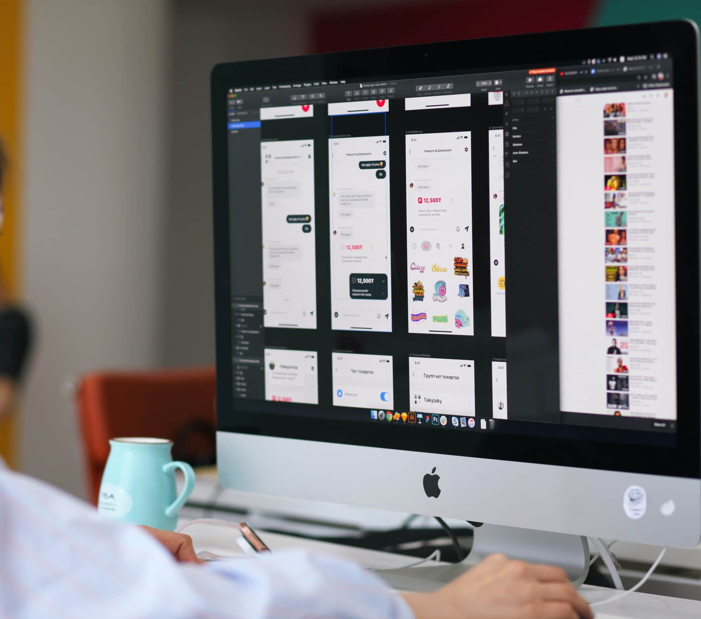

-Others
/Fav Article
This is my favorite articles that provides insight that you can see.

UI/UX
60+ UI/UX Design Tools & Resource Gratis untuk Bantu Pekerjaan Desainer
Rangkuman 60 website lebih yang berisi tools dan resource gratis untuk UI/UX Designer dari pemula sampai profesional!
Read MoreUI/UX
5 Rekomendasi Buku UX Writing untuk Menjadi Seorang UX Writer
Ingin berkecimpung di ranah UX Writter? Ini lima buku rekomendasi UX Writing yang bisa membantu kamu menjadi UX Writter yang handal!
Read More

UI/UX
Kiat-Kiat Saat Design Handoff, Buat Developer Mengerti Kamu!
Sebelum memberikan design handoff kepada tim Developer, ada beberapa hal yang perlu diperhatikan terlebih dahulu. Yuk pahami tahapannya!
Read More